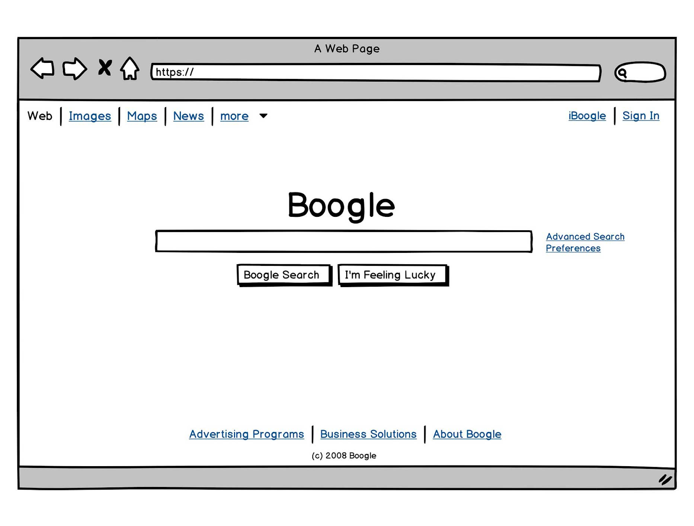
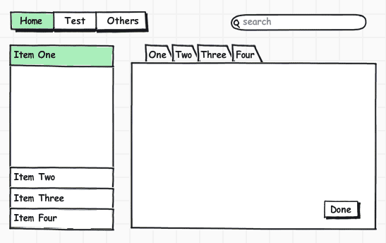
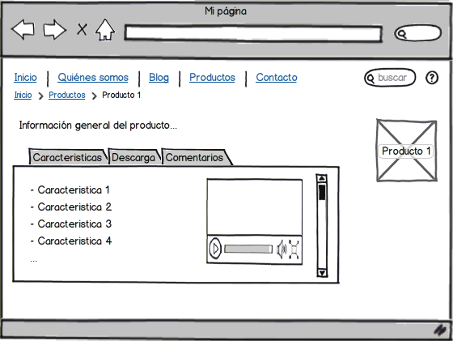

En el MDI encontramos las opciones principales con las que cuenta el sistema. Cada opción permitirá realizar una serie de actividades las cuales tienen como objetivo hacer que el sistema sea fácil de utilizar.
Volverá al resto de opciones del sistema, para cambiar de modulo.
Desplegará las opciones de manipulación de registros, en este caso se presentan Movimiento de Inventario, Mantenimientos y Traslado de Productos.
Mostrará las opciones relacionadas con el muestreo de registros y de auditoria.